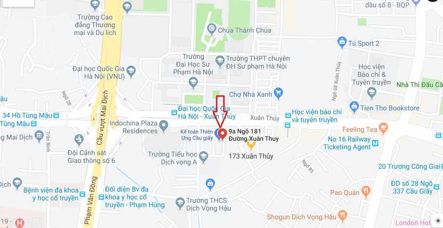
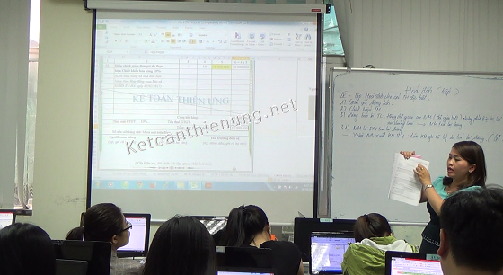

Kế toán Diệu Tâm Cầu Giấy là 1 địa chỉ học kế toán ở Cầu Giấy - Hà Nội uy tín: Các lớp học kế toán tổng hợp tại Cầu Giấy được thực hành trực tiếp trên hóa đơn, chứng từ thực tế và các phần mềm kế toán như: HTKK, Excel, Misa...
- Nhà B11, Số 9A (Tòa nhà Richland), Ngõ 181 Xuân Thủy, Cầu giấy, Hà Nội
ĐT: 0777.315.188 (Zalo)

Bản đồ Kế toán Diệu Tâm cơ sở Cầu Giấy Google map:
------------------------------------------------------------------------------------------------------
- Với vị trí như trên các bạn muốn học kế toán thực hành ở Bắc Từ Liêm, Nam Từ Liêm, Tây Hồ, Ba Đình, Đông Anh, Đan Phượng, Hoài Đức ... có thể qua Kế toán Diệu Tâm Cầu Giấy cũng thuận tiện.
-> Tòa nhà Richland nằm chỉ cách mặt đường Xuân Thủy khoảng 10m rất dễ tìm, bên cạnh đó có rất nhiều tuyến xe buýt chạy qua đây như: Số 16, 20A, 20B, 26, 32, 34: -> Nên các bạn đi bằng xe buýt cũng rất thuận tiện.
Khi đến với địa chỉ học kế toán tại Cầu giấy của Công ty kế toán Diệu Tâm các bạn sẽ được đào tạo và trải nghiệm làm các công việc của người kế toán thực tế.
- Tại đây có rất nhiều khóa học phù hợp với mọi đối tượng cũng như nhu cầu và trình độ của các bạn, từ những người chưa biết gì về kế toán đến những người đã học và đang làm kế toán thì khi đến với Công ty các bạn sẽ tìm được khóa học phù hợp với bản thân, cụ thể như sau:
Ví dụ:
1. Nếu bạn là người đã học kế toán hoặc đang làm kế toán nội bộ (Tức là các bạn đã biết định khoản, hạch toán -> Bây giờ muốn học để lên được Báo cáo tài chính, lập Tờ khai Quyết toán thuế cuối năm ...) -> Các bạn sẽ được học thực hành thực tế luôn (38 buổi), cụ thể:
- Các bạn sẽ được phát cho 1 bộ hóa đơn chứng từ thực tế như: Hóa đơn GTGT, hóa đơn bán hàng, phiếu thu, chi, phiếu xuất kho, nhập kho, chứng từ ngân hàng ...Ngoài ra trong đó còn bao gồm các trường hợp như: Hóa đơn viết sai, hàng khuyến mãi, chiết khấu thương mại, hàng bán trả lại, kê khai sai ...
=> Dựa vào bộ hóa đơn, chứng từ thực tế đó các bạn sẽ được hướng dẫn thực hành và xử lý tất cả các công việc kế toán từ khâu: Xử lý hóa đơn, hạch toán các nghiệp vụ vào sổ sách; Tính lương, BHXH, tính trích khấu hao TSCĐ, Phân bổ chi phí trả trước (Công cụ dụng cụ); Kê khai thuế GTGT, TNCN hàng tháng quý, lập báo cáo tình hình sử dụng hóa đơn; Hạch toán các bút toán kết chuyển cuối kỳ; Xác định chi phí được trừ - không được trừ; Lập Báo cáo tài chính, Lập Tờ khai quyết toán thuế TNCN, TNDN cuối năm…Thực hành trực tiếp trên các phần mềm kế toán như: HTKK, EXCEL, MISA.
=> Chi tiết về chương trình đào tạo xem tại đây: Lớp học thực hành kế toán tổng hợp (cho người đã học kế toán).
2. Nếu bạn mới bắt đầu (chưa biết gì về kế toán) hoặc đã học nhưng quên hết (mất gốc): (Tức là các bạn chưa biết định khoản, hạch toán kế toán): => Các bạn sẽ được học nguyên lý kế toán trước, cụ thể:
- Tìm hiểu Công việc kế toán phải làm; Hệ thống tải khoản, sổ sách, chứng từ, báo cáo kế toán…
- Cập nhật những Luật thuế - Luật kế toán mới nhất.
- Cách định khoản, hạch toán các nghiệp vụ kế toán..
-> Sau khi học xong (9 buổi) nguyên lý: -> Các bạn sẽ được chuyển sang học thực hành thực tế (38 buổi) -> Tức là chuyển sang học Khóa học (dành cho người đã học kế toán) bên trên. (Tổng là 47 buổi).
=> Chi tiết về khóa học bạn có thể xem tại đây: Lớp học kế toán cho người mới bắt đầu (hoặc mất gốc).
- Khóa học nguyên lý, nghiệp vụ kế toán (9 buổi)
- Khóa học kế toán thuế thực tế trên phần mềm HTKK (17 buổi)
- Khóa học lên sổ sách, lập Báo cáo tài chính trên Excel (10 buổi)
- Khóa học lên sổ sách, lập Báo cáo tài chính trên phần mềm kế toán Misa (11 buổi)
Nội dung chi tiết từng khóa, học phí các bạn xem tại đây nhé:
----------------------------------------------------------------------
Chú ý:
- Khóa kế toán thực hành tổng hợp (cho người đã học) cụ thể là gồm 3 khóa nhỏ là: Khóa Thuế + Excel + Misa. -> tức là 38 buổi.
- Khóa kế toán tổng hợp cho người mới bắt đầu (hoặc mất gốc) là gồm 4 khóa nhỏ là: Khóa Nguyên lý + Thuế + Excel + Misa. -> tức là 47 buổi.
- Một ngày có 3 ca:
Ca sáng từ 8h30 – 11h,
Ca chiều từ 14h – 16h30,
Ca tối từ 18h – 20h30.
- Một tuần học 3 buổi: 2,4,6 hoặc 3,5,7.
-> Bạn muốn học cấp tốc có thể học 1 tuần 6 buổi: học từ thứ 2 - thứ 6.
- Một lớp từ 10 - 20 học viên (mỗi học viên 1 máy tính).
Lịch khai giảng:
- Các lớp học khai giảng hàng tuần nhé, bạn đăng ký xong khoảng từ 2 - 5 ngày là đi học được ngay nhé.

(hình ảnh lớp học kế toán thực tế tại Cầu Giấy)
-> Trong từng buổi học chúng tôi sẽ đưa 1 số tình huống khó ở ngoài thực tế vào để hướng dẫn các bạn cùng xử lý như: Hóa đơn viết sai xử lý như thế nào, kê khai sai thì kê khai điều chỉnh bổ sung ra sao; Hàng tồn kho bị âm trên sổ sách; Hạch toán và làm báo cáo bị sai xử lý thế nào …
- Được hỗ trợ giới thiệu việc làm.
- Được hỗ trợ giải đáp các vướng mắc trong quá trình đi làm sau này.
- Được tặng phần mềm kế toán như: Excel, Misa, HTKK.
- Được hỗ trợ tin học văn phòng miễn phí.
- Được hỗ trợ tài liệu, đóng dấu xác nhận thực tập (nếu bạn là sinh viên cần nơi thực tập)
- Được cấp chứng chỉ kế toán tổng hợp thực hành thực tế.

(hình ảnh mẫu chứng chỉ kế toán thực hành thực tế tại Diệu Tâm)
Ngoài Kế toán Diệu Tâm cơ sở Cầu giấy, trung tâm còn có các Địa chỉ học kế toán ở Thanh xuân, Hà Đông, Định Công (Hoàng Mai), Long Biên, Quận 3 TP. HCM, Quận Thủ Đức TP. Hồ Chí Minh...
Chi tiết xem tại đây nhé: Địa chỉ học kế toán Diệu Tâm
-----------------------------------------------------------------------------------------
Email: ketoandieutam@gmail.com
---------------------------------------------------------------------